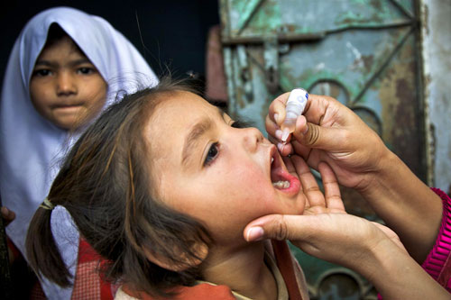

The Coming Eradication of Polio
Lauren Mock
Fall 2011
 So long ago, over 20
years, was the last
case of indigenous poliomyelitis
(polio) reported in the Americas that
few remember the specter of iron lungs, crutches, and death from this
highly virulent disease, or the emotional relief with news of the
development of vaccines by Jonas Salk and Albert Sabin.
Polio is a contagious viral disease that frequently targets children less than five years of age. It attacks the nervous system and often cripples or kills the afflicted. Many people who are carriers of the disease exhibit no symptoms and silently infect others. Polio spreads rapidly in areas with poor sanitation; insects can passively transfer the virus from feces to food. Though efforts of government and organizations like the March of Dimes and the Rotary have successfully eradicated the disease from North America, the specter of this disease remains.
The California Department of Public Health announced, as of October 10, 2011, that 44 suspected and confirmed cases of another viral disease, parotitis (mumps), have infected students at the University of California at Berkeley. The disease broke out locally when one student contracted the disease in Great Britain, and upon returning to the campus, passed the virus to others in the residential housing system and from those infected to others throughout the campus. Lines grew around the block of the Tang Student Health center as students sought protective vaccinations. It only took one student to ignite the outbreak.
This recent importation and outbreak illustrate that in today’s global village, the possibility of a single carrier of a deadly disease among any community is not as remote as people would like to think. Consequently, with polio so insidious in its incubation and virulent in its communicability, the World Health Organization (WHO) considers even a single case of polio paralysis to be evidence of an epidemic in areas where polio has been eliminated.
There is no cure for polio; yet, polio is ripe for eradication. Polio can only survive a short time in the environment, has no virus reservoir in animals, and affects only people. Moreover, safe, effective, and inexpensive vaccines, given in multiple doses, provide life-long immunity. Thus, the eradication strategy is to prevent further infection by immunizing sufficient numbers of children, making them unsusceptible to the disease, and effectively ending the cycle of infectious transmission.
So far, progress towards eradication has been successful. The Global Polio Eradication Initiative reported that in 1988 when coordinated eradication efforts began, polio paralyzed more than 1000 children worldwide every day. Since then, 2.5 billion children have been immunized against polio. As late as 2009, fewer than 2000 cases were reported for the entire year, and that number has been falling rapidly.
Still, polio remains an epidemic in nations like Afghanistan, India, Nigeria and Pakistan, with several countries across Africa and Asia experiencing ongoing outbreaks or re-established transmission of polio virus from importations. Because of costs, some policymakers have argued for a strategy of effective control, rather than the complete eradication of polio. However economic modeling studies from the Global Polio Eradication Initiative have demonstrated that beyond fundamental humanitarian benefits, eradication is not only cost-effective, but also offers critical monetary savings that accrue to low-income countries.
Occasional setbacks remain. WHO reported that in 2009-2010, 23 previously polio-free countries were re-infected due to imports of the virus. Even the European Region suffered its first importation of polio in 2010, after already having received polio free-certification.
Yet, eradication of polio remains within
tantalizing reach. With
continued efforts and sufficient funding, polio may someday join
smallpox which with the efforts of WHO and worldwide organizations was
successfully eradicated and relegated to laboratory stock in 1980.